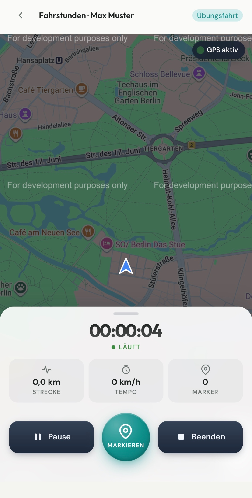
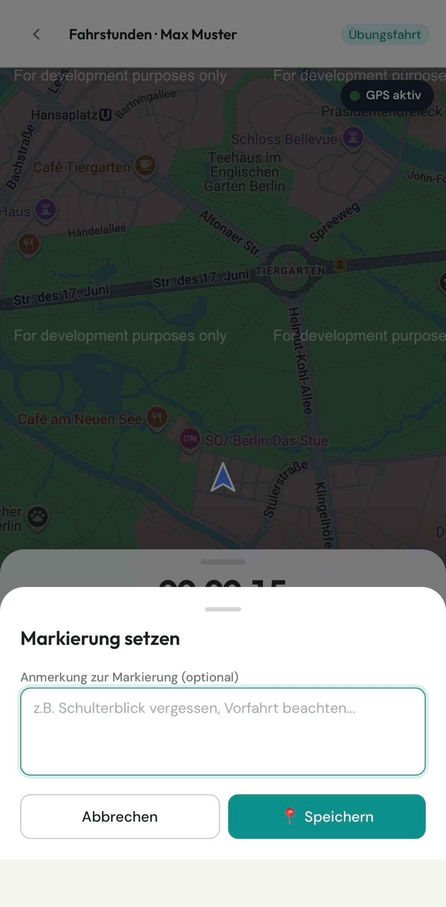
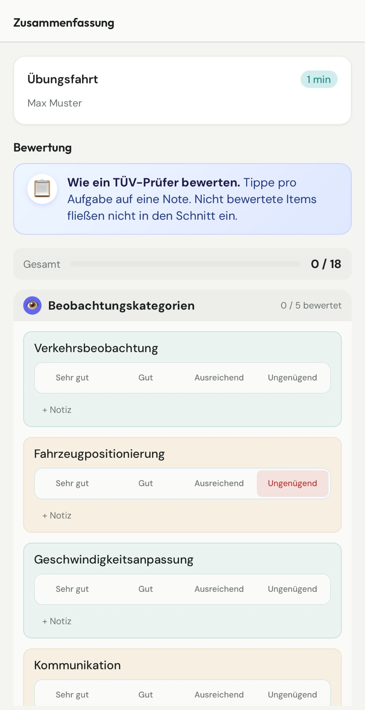
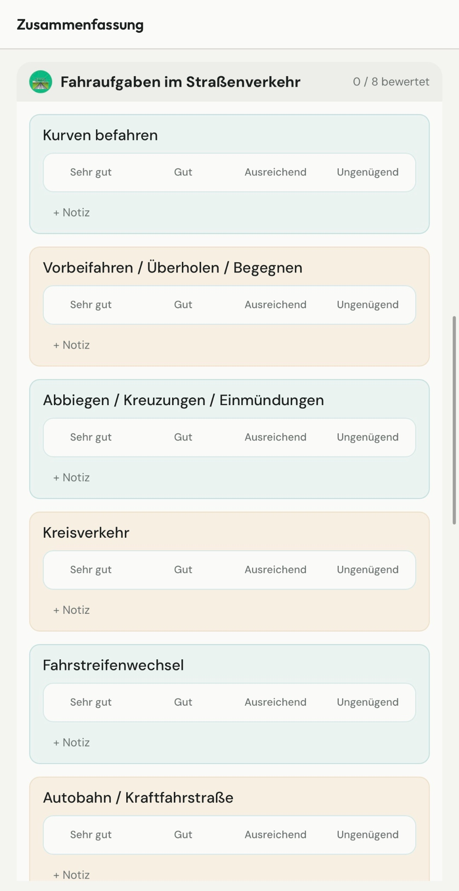
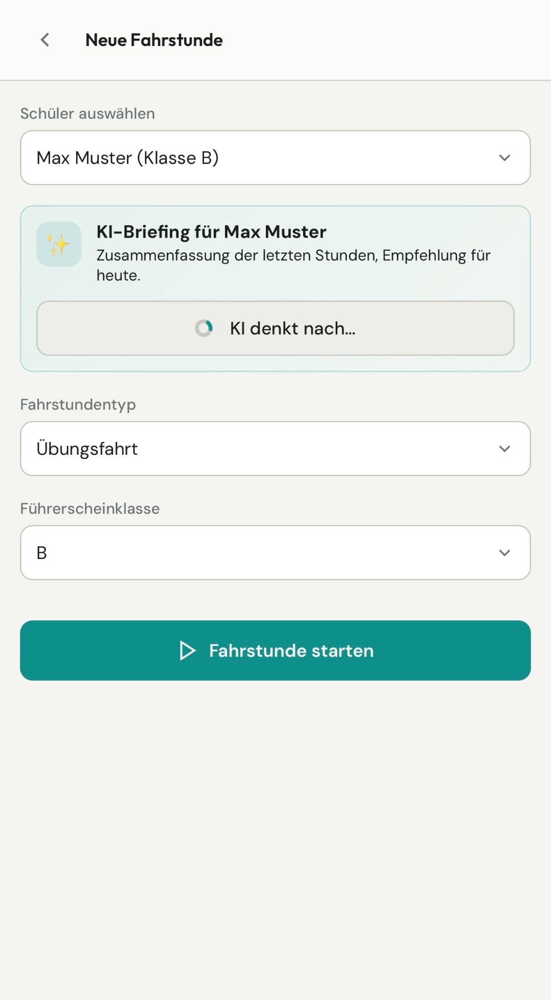
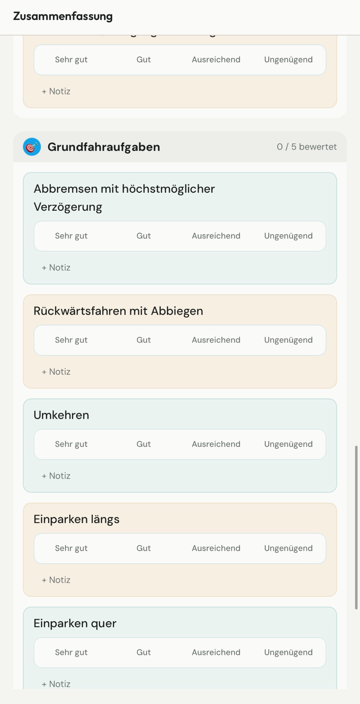

Planung & Termine anbieten
Schulen bieten freie 45- oder 90-Minuten-Slots aus dem Kalender an, Schüler buchen nach dem First-come-first-served-Prinzip.
FahrDoc zeichnet jede Fahrstunde per GPS auf, du markierst kritische Stellen mit Street View, bewertest 18 Aufgaben wie ein TÜV-Prüfer und bekommst vor der nächsten Stunde ein automatisches KI-Briefing.
Komplett kostenlos · Solo-Fahrlehrer & Fahrschulen · Klassen B, A, A1, A2, AM

Sobald die Fahrstunde beginnt, läuft die GPS-Aufzeichnung. Die App zeigt live die gefahrene Strecke, Geschwindigkeit, Dauer und gesetzte Markierungen.

Nach jeder Fahrstunde bewertest du strukturiert nach den gleichen Kategorien, die ein TÜV-Prüfer abfragt. Nicht bewertete Items fließen nicht in den Schnitt ein — du bewertest nur, was wirklich beobachtbar war.


FahrDoc wertet die letzten Fahrstunden aus und schreibt vor der nächsten Stunde automatisch ein Briefing — mit aktuellem Stand, was schon gut läuft, was geübt werden muss und einer konkreten Empfehlung für heute.

Abbremsen mit höchstmöglicher Verzögerung, Rückwärtsfahren mit Abbiegen, Umkehren, Einparken längs und quer — jede Aufgabe wird einzeln bewertet und später nachvollziehbar.

Schulen bieten freie 45- oder 90-Minuten-Slots aus dem Kalender an, Schüler buchen nach dem First-come-first-served-Prinzip.
Schulungsräume mit Sitzplätzen verwalten und die Theorie-Themen vom Grundstoff bis zum Zusatzstoff strukturieren.
Fahrzeuge der Fahrschule zentral anlegen und einzelnen Terminen zuordnen.
Übersicht über Fahrlehrer, Fahrschüler und neue Anmeldungen. Soll-Positionen drucken, exportieren oder abhaken.
Fahrschüler treten der Schule per individuellem Einladungs-Code bei.
Eine App für Fahrschule, Fahrlehrer und Fahrschüler – jede Rolle mit passender Ansicht.
Keine Testphase, keine Karte, keine versteckten Kosten. Für Solo-Fahrlehrer und Fahrschulen — mit allem, was FahrDoc kann.
Fragen? Schreib uns an info@fahrdoc.app
0 €/ dauerhaft
Für selbständige Fahrlehrer ohne Fahrschule
0 €/ dauerhaft
Für Fahrschulen mit mehreren Lehrern
0 €/ dauerhaft
Fahrschule mit KI-Funktion